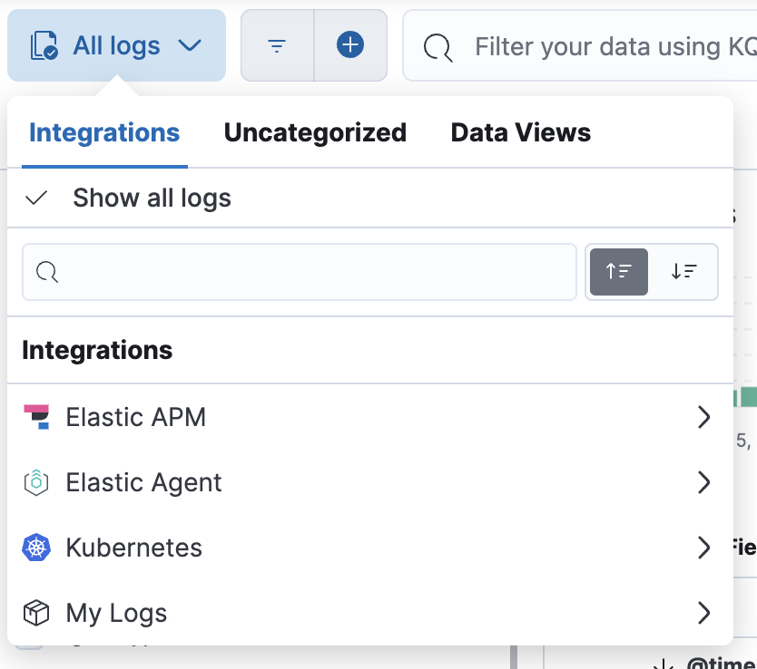

Stream any log file
editStream any log file
edit[preview] This functionality is in technical preview and may be changed or removed in a future release. Elastic will work to fix any issues, but features in technical preview are not subject to the support SLA of official GA features.
Required role
The Admin role or higher is required to onboard log data. To learn more, refer to Assign user roles and privileges.
This guide shows you how to send a log file to your Observability project using a standalone Elastic Agent and configure the Elastic Agent and your data streams using the elastic-agent.yml file, and query your logs using the data streams you’ve set up.
The quickest way to get started is to:
- Open your Observability project. If you don’t have one, create an observability project.
- Go to Add Data.
- Under Collect and analyze logs, click Stream log files.
This will kick off a set of guided instructions that walk you through configuring the standalone Elastic Agent and sending log data to your project.
To install and configure the Elastic Agent manually, refer to Manually install and configure the standalone Elastic Agent.
Configure inputs and integration
editEnter a few configuration details in the guided instructions.
Configure inputs
-
Log file path: The path to your log files. You can also use a pattern like
/var/log/your-logs.log*. Click Add row to add more log file paths.This will be passed to the
pathsfield in the generatedelastic-agent.ymlfile in a future step. - Service name: Provide a service name to allow for distributed services running on multiple hosts to correlate the related instances.
Configure integration
Elastic creates an integration to streamline connecting your log data to Elastic.
-
Integration name: Give your integration a name. This is a unique identifier for your stream of log data that you can later use to filter data in Logs Explorer. The value must be unique within your project, all lowercase, and max 100 chars. Special characters will be replaced with
_.This will be passed to the
streams.idfield in the generatedelastic-agent.ymlfile in a future step.The integration name will be used in Logs Explorer. It will appear in the "All logs" dropdown menu.

-
Dataset name: Give your integration’s dataset a name. The name for your dataset data stream. Name this data stream anything that signifies the source of the data. The value must be all lowercase and max 100 chars. Special characters will be replaced with
_.This will be passed to the
data_stream.datasetfield in the generatedelastic-agent.ymlfile in a future step.
Install the Elastic Agent
editAfter configuring the inputs and integration, you’ll continue in the guided instructions to install and configure the standalone Elastic Agent.
Run the command under Install the Elastic Agent that corresponds with your system to download, extract, and install the Elastic Agent. Turning on Automatically download the agent’s config includes your updated Elastic Agent configuration file in the download.
If you do not want to automatically download the configuration, click Download config file to download it manually and
add it to /opt/Elastic/Agent/elastic-agent.yml on the host where you installed the Elastic Agent.
The values you provided in Configure inputs and integration will be prepopulated in the generated configuration file.
Manually install and configure the standalone Elastic Agent
editIf you’re not using the guided instructions, follow these steps to manually install and configure your the Elastic Agent.
Step 1: Download and extract the Elastic Agent installation package
editOn your host, download and extract the installation package that corresponds with your system:
curl -L -O https://artifacts.elastic.co/downloads/beats/elastic-agent/elastic-agent-8.15.4-darwin-x86_64.tar.gz tar xzvf elastic-agent-8.15.4-darwin-x86_64.tar.gz
curl -L -O https://artifacts.elastic.co/downloads/beats/elastic-agent/elastic-agent-8.15.4-linux-x86_64.tar.gz tar xzvf elastic-agent-8.15.4-linux-x86_64.tar.gz
# PowerShell 5.0+ wget https://artifacts.elastic.co/downloads/beats/elastic-agent/elastic-agent-8.15.4-windows-x86_64.zip -OutFile elastic-agent-8.15.4-windows-x86_64.zip Expand-Archive .\elastic-agent-8.15.4-windows-x86_64.zip
Or manually:
- Download the Elastic Agent Windows zip file from the download page.
- Extract the contents of the zip file.
To simplify upgrading to future versions of Elastic Agent, we recommended that you use the tarball distribution instead of the DEB distribution.
curl -L -O https://artifacts.elastic.co/downloads/beats/elastic-agent/elastic-agent-8.15.4-amd64.deb sudo dpkg -i elastic-agent-8.15.4-amd64.deb
To simplify upgrading to future versions of Elastic Agent, we recommended that you use the tarball distribution instead of the RPM distribution.
curl -L -O https://artifacts.elastic.co/downloads/beats/elastic-agent/elastic-agent-8.15.4-x86_64.rpm sudo rpm -vi elastic-agent-8.15.4-x86_64.rpm
Step 2: Install and start the Elastic Agent
editAfter downloading and extracting the installation package, you’re ready to install the Elastic Agent. From the agent directory, run the install command that corresponds with your system:
On macOS, Linux (tar package), and Windows, run the install command to
install and start Elastic Agent as a managed service and start the service. The DEB and RPM
packages include a service unit for Linux systems with
systemd, For these systems, you must enable and start the service.
You must run this command as the root user because some integrations require root privileges to collect sensitive data.
sudo ./elastic-agent install
You must run this command as the root user because some integrations require root privileges to collect sensitive data.
sudo ./elastic-agent install
Open a PowerShell prompt as an Administrator (right-click the PowerShell icon and select Run As Administrator).
From the PowerShell prompt, change to the directory where you installed Elastic Agent, and run:
.\elastic-agent.exe install
You must run this command as the root user because some integrations require root privileges to collect sensitive data.
You must run this command as the root user because some integrations require root privileges to collect sensitive data.
During installation, you’ll be prompted with some questions:
-
When asked if you want to install the agent as a service, enter
Y. -
When asked if you want to enroll the agent in Fleet, enter
n.
Step 3: Configure the Elastic Agent
editAfter your agent is installed, configure it by updating the elastic-agent.yml file.
You’ll find the elastic-agent.yml in one of the following locations according to your system:
Main Elastic Agent configuration file location:
/Library/Elastic/Agent/elastic-agent.yml
Main Elastic Agent configuration file location:
/opt/Elastic/Agent/elastic-agent.yml
Main Elastic Agent configuration file location:
C:\Program Files\Elastic\Agent\elastic-agent.yml
Main Elastic Agent configuration file location:
/etc/elastic-agent/elastic-agent.yml
Main Elastic Agent configuration file location:
/etc/elastic-agent/elastic-agent.yml
Update the default configuration in the elastic-agent.yml file manually.
It should look something like this:
outputs:
default:
type: elasticsearch
hosts: '<your-elasticsearch-endpoint>:<port>'
api_key: 'your-api-key'
inputs:
- id: your-log-id
type: filestream
streams:
- id: your-log-stream-id
data_stream:
dataset: example
paths:
- /var/log/your-logs.log
You need to set the values for the following fields:
| Field | Value |
|---|---|
|
Copy the Elasticsearch endpoint from your project’s page and add the port (the default port is If you’re following the guided instructions in your project, the Elasticsearch endpoint will be prepopulated in the configuration file. If you need to find your project’s Elasticsearch endpoint outside the guided instructions:
|
|
Use an API key to grant the agent access to your project.
The API key format should be If you’re following the guided instructions in your project, an API key will be autogenerated and will be prepopulated in the downloadable configuration file. If configuring the Elastic Agent manually, create an API key:
|
|
A unique identifier for your input. |
|
The type of input. For collecting logs, set this to |
|
A unique identifier for your stream of log data. If you’re following the guided instructions in your project, this will be prepopulated with the value you specified in Configure inputs and integration. |
|
The name for your dataset data stream. Name this data stream anything that signifies the source of the data. In this configuration, the dataset is set to If you’re following the guided instructions in your project, this will be prepopulated with the value you specified in Configure inputs and integration. |
|
The path to your log files. You can also use a pattern like If you’re following the guided instructions in your project, this will be prepopulated with the value you specified in Configure inputs and integration. |
After updating your configuration file, you need to restart the Elastic Agent.
First, stop the Elastic Agent and its related executables using the command that works with your system:
sudo launchctl unload /Library/LaunchDaemons/co.elastic.elastic-agent.plist
Elastic Agent will restart automatically if the system is rebooted.
sudo service elastic-agent stop
Elastic Agent will restart automatically if the system is rebooted.
Stop-Service Elastic Agent
If necessary, use Task Manager on Windows to stop Elastic Agent. This will kill the
elastic-agent process and any sub-processes it created (such as Beats).
Elastic Agent will restart automatically if the system is rebooted.
The DEB package includes a service unit for Linux systems with systemd. On these systems, you can manage Elastic Agent by using the usual systemd commands.
Use systemctl to stop the agent:
sudo systemctl stop elastic-agent
Otherwise, use:
sudo service elastic-agent stop
Elastic Agent will restart automatically if the system is rebooted.
The RPM package includes a service unit for Linux systems with systemd. On these systems, you can manage Elastic Agent by using the usual systemd commands.
Use systemctl to stop the agent:
sudo systemctl stop elastic-agent
Otherwise, use:
sudo service elastic-agent stop
Elastic Agent will restart automatically if the system is rebooted.
Next, restart the Elastic Agent using the command that works with your system:
sudo launchctl load /Library/LaunchDaemons/co.elastic.elastic-agent.plist
sudo service elastic-agent start
Start-Service Elastic Agent
The DEB package includes a service unit for Linux systems with systemd. On these systems, you can manage Elastic Agent by using the usual systemd commands.
Use systemctl to start the agent:
sudo systemctl start elastic-agent
Otherwise, use:
sudo service elastic-agent start
The RPM package includes a service unit for Linux systems with systemd. On these systems, you can manage Elastic Agent by using the usual systemd commands.
Use systemctl to start the agent:
sudo systemctl start elastic-agent
Otherwise, use:
sudo service elastic-agent start
Troubleshoot your Elastic Agent configuration
editIf you’re not seeing your log files in your project, verify the following in the elastic-agent.yml file:
-
The path to your logs file under
pathsis correct. -
Your API key is in
<id>:<key>format. If not, your API key may be in an unsupported format, and you’ll need to create an API key in Beats format.
If you’re still running into issues, refer to Elastic Agent troubleshooting and Configure standalone Elastic Agents.
Next steps
editAfter you have your agent configured and are streaming log data to your project:
- Refer to the Parse and organize logs documentation for information on extracting structured fields from your log data, rerouting your logs to different data streams, and filtering and aggregating your log data.
- Refer to the Filter and aggregate logs documentation for information on filtering and aggregating your log data to find specific information, gain insight, and monitor your systems more efficiently.